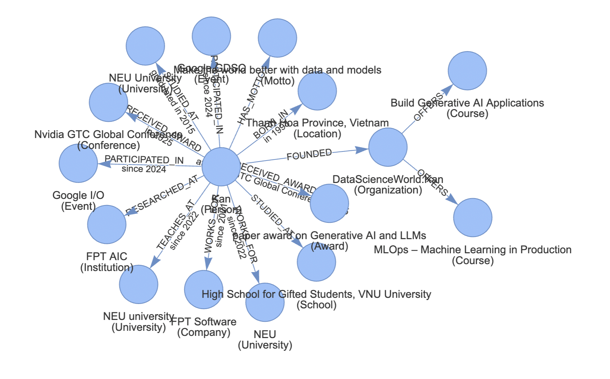

Agent memory¶

Vinagent features a Graphical Memory system that transforms messages into a structured knowledge graph composed of nodes, relationships, and edges. This memory can be organized into short-term and long-term components, allowing the Agent to retain and recall learned information effectively.
Compared to traditional Conversational Memory, Graphical Memory offers distinct advantages: it condenses essential information into a graph format, reducing hallucinations by filtering out redundant or irrelevant details. Additionally, because it operates with a shorter context length, it significantly lowers computational costs.
This graph-based approach mirrors how humans conceptualize and retain knowledge, making it especially powerful for capturing the core meaning of complex conversations.
Setup¶
Install vinagent package
Write environment variable
Initialize Memory¶
Vinagent is outstanding with organizing Memory as a Knowledge Graph. We leverage AucoDB features to enhance graph's capabilities of agent. The graph-based features is supported as follows:
-
Graph Construction: Builds knowledge graphs from documents using
LLMGraphTransformerclass from AucoDB, extracting entities (nodes) and relationships with enriched properties such as categories, roles, or timestamps. -
Property Enrichment: Enhances nodes and relationships with contextual attributes derived from the input text, improving graph expressiveness.
-
Graph Visualization: Visualizes the constructed graph and exports it as a html file for easy sharing and analysis.
-
Neo4j Integration: Stores and manages graphs in a Neo4j database with secure client initialization.
-
Flexible Input: Processes unstructured text to create structured graphs, suitable for applications like knowledge management, AI research, and data analysis.
Prerequisites
- Neo4j Database: A running Neo4j instance (local or remote).
- Python Packages: Install required dependencies:
from langchain_together.chat_models import ChatTogether
from dotenv import load_dotenv, find_dotenv
from vinagent.memory import Memory
load_dotenv(find_dotenv('.env'))
llm = ChatTogether(
model="meta-llama/Llama-3.3-70B-Instruct-Turbo-Free"
)
memory = Memory(
memory_path="templates/memory.jsonl",
is_reset_memory=True, # will reset the memory every time the agent is invoked
is_logging=True
)
text_input = """Hi, my name is Kan. I was born in Thanh Hoa Province, Vietnam, in 1993.
My motto is: "Make the world better with data and models". That’s why I work as an AI Solution Architect at FPT Software and as an AI lecturer at NEU.
I began my journey as a gifted student in Mathematics at the High School for Gifted Students, VNU University, where I developed a deep passion for Math and Science.
Later, I earned an Excellent Bachelor's Degree in Applied Mathematical Economics from NEU University in 2015. During my time there, I became the first student from the Math Department to win a bronze medal at the National Math Olympiad.
I have been working as an AI Solution Architect at FPT Software since 2021.
I have been teaching AI and ML courses at NEU university since 2022.
I have conducted extensive research on Reliable AI, Generative AI, and Knowledge Graphs at FPT AIC.
I was one of the first individuals in Vietnam to win a paper award on the topic of Generative AI and LLMs at the Nvidia GTC Global Conference 2025 in San Jose, USA.
I am the founder of DataScienceWorld.Kan, an AI learning hub offering high-standard AI/ML courses such as Build Generative AI Applications and MLOps – Machine Learning in Production, designed for anyone pursuing a career as an AI/ML engineer.
Since 2024, I have participated in Google GDSC and Google I/O as a guest speaker and AI/ML coach for dedicated AI startups.
"""
memory.save_short_term_memory(llm, text_input, user_id="Kan")
memory_message = memory.load_memory_by_user(load_type='string', user_id="Kan")
print(memory_message)
Kan -> BORN_IN[in 1993] -> Thanh Hoa Province, Vietnam
Kan -> WORKS_FOR[since 2021] -> FPT Software
Kan -> WORKS_FOR[since 2022] -> NEU
Kan -> STUDIED_AT -> High School for Gifted Students, VNU University
Kan -> STUDIED_AT[graduated in 2015] -> NEU University
Kan -> RESEARCHED_AT -> FPT AIC
Kan -> RECEIVED_AWARD[at Nvidia GTC Global Conference 2025] -> paper award on Generative AI and LLMs
Kan -> FOUNDED -> DataScienceWorld.Kan
Kan -> PARTICIPATED_IN[since 2024] -> Google GDSC
Kan -> PARTICIPATED_IN[since 2024] -> Google I/O
DataScienceWorld.Kan -> OFFERS -> Build Generative AI Applications
DataScienceWorld.Kan -> OFFERS -> MLOps – Machine Learning in Production
Load memory by user_id¶
Memory is organized by user_id to segment each user’s data within the long-term memory. Before starting a conversation, the agent can access the memory associated with the given user_id, which helps prevent confusion between users the agent has previously interacted with and toward on a more personalized experience. For instance, if the agent has a conversation with Mr. Kan, it can recall all that information in future sessions by referencing user_id='Kan'.
[{
"head": "Kan",
"head_type": "Person",
"relation": "PARTICIPATED_IN",
"relation_properties": "since 2024",
"tail": "Google I/O",
"tail_type": "Event"
},
{
"head": "Kan",
"head_type": "Person",
"relation": "HAS_MOTTO",
"relation_properties": "",
"tail": "Make the world better with data and models",
"tail_type": "Motto"
},
...
]
Therefore, Agent can utilize this personalized graph-based memory to provide more accurate and relevant responses, which align with user's preferences.
Agent with memory¶
This feature allows to adhere Memory for each Agent. This is useful when you want to keep track of the user's behavior and conceptualize knowledge as a graph. As a result, it helps agent become more intelligent and capable of understanding personality and responding to user queries with greater accuracy.
We structure our memory as a dictionary, where each key represents a user identifier. This memory is then injected into the Agent during initialization by setting memory_path="your_memory_path.jsonl" as a long-term memory.
Asking agent with user_id = 'Kan'
import os
import sys
from langchain_together import ChatTogether
from vinagent.agent import Agent
from vinagent.memory.memory import Memory
from pathlib import Path
from dotenv import load_dotenv
load_dotenv()
llm = ChatTogether(
model="meta-llama/Llama-3.3-70B-Instruct-Turbo-Free"
)
# Step 1: Create Agent with tools
agent = Agent(
llm = llm,
description="You are my close friend",
skills=[
"You can remember all memory related to us",
"You can remind the memory to answer questions",
"You can remember the history of our relationship"
],
memory_path='templates/memory.jsonl',
is_reset_memory=False # If True, reset memory each time re-initialize agent, else use existing memory
)
# Step 2: invoke the agent
message = agent.invoke("What is your Motto?", user_id="Kan")
message.content
Each message in the conversation is considered as a short-term memory. You can save them to long-term memory under the Graph form by setting is_save_memory=True.
message = agent.invoke("Hi, I'm Kan, who is a leader of Vinagent project", user_id="Kan", is_save_memory=True)
A new information is saved into memory about Mr. Kan is the leader of Vinagent project.
{
"Kan": [
{
"head": "Kan",
"head_type": "Person",
"relation": "PARTICIPATED_IN",
"relation_properties": "since 2024",
"tail": "Google I/O",
"tail_type": "Event"
},
{
"head": "Kan",
"head_type": "Person",
"relation": "HAS_MOTTO",
"relation_properties": "",
"tail": "Make the world better with data and models",
"tail_type": "Motto"
},
{
"head": "Kan",
"head_type": "Person",
"relation": "LEADS",
"relation_properties": "",
"tail": "Vinagent project",
"tail_type": "Project"
}
]
}
Visualize on Neo4j¶
You can explore the knowledge graph on-premise using the Neo4j dashboard at http://localhost:7474/browser/. This allows you to intuitively understand the nodes and relationships within your data.
To enable this visualization, the AucoDBNeo4jClient, a client instance from the AucoDB library, supports ingesting graph memory directly into a Neo4j database. Once the data is ingested, you can use Cypher queries to retrieve nodes and edges for inspection or further analysis.
Note
Authentication: Access to the Neo4j dashboard requires login using the same username/password credentials configured in your Docker environment (e.g., via the NEO4J_AUTH variable).
If you prefer not to use the Neo4j web interface, the AucoDBNeo4jClient also provides a convenient method to export the entire graph to an HTML file, which is client.visualize_graph(output_path="my_graph.html").
This method generates a standalone HTML file containing an interactive graph visualization, ideal for embedding in reports or sharing with others without requiring Neo4j access.
Start Neo4j service¶
Neo4j database can be install as a docker service. We need to create a docker-compose.yml file on local and start Neo4j database as follows:
%%writefile docker-compose.yml
version: '3.8'
services:
neo4j:
image: neo4j:latest
container_name: neo4j
ports:
- "7474:7474"
- "7687:7687"
environment:
- NEO4J_AUTH=neo4j/abc@12345
Start neo4j service by command:
Export Knowledge Graph¶
Install dependency AucoDB library to ingest knowledge graph to Neo4j database and and export graph to html file.
Initialze client instance
from langchain_together.chat_models import ChatTogether
from aucodb.graph.neo4j_client import AucoDBNeo4jClient
from aucodb.graph import LLMGraphTransformer
from dotenv import load_dotenv
# Step 1: Initialize AucoDBNeo4jClient
# Method 1: dirrectly passing arguments, but not ensure security
NEO4J_URI = "bolt://localhost:7687" # Update with your Neo4j URI
NEO4J_USER = "neo4j" # Update with your Neo4j username
NEO4J_PASSWORD = "abc@12345" # Update with your Neo4j password
client = AucoDBNeo4jClient(uri = NEO4J_URI, user = NEO4J_USER, password = NEO4J_PASSWORD)
# Step 2: Save user memory into jsonline
import json
with open("user_memory.jsonl", "w") as f:
for item in message_user:
f.write(json.dumps(item) + "\n")
# Step 3: Load user_memory.jsonl into Neo4j.
client.load_json_to_neo4j(
json_file='user_memory.jsonl',
is_reset_db=False
)
# Step 4: Export graph into my_graph.html file.
client.visualize_graph(output_file="my_graph.html", show_in_browser=True)
